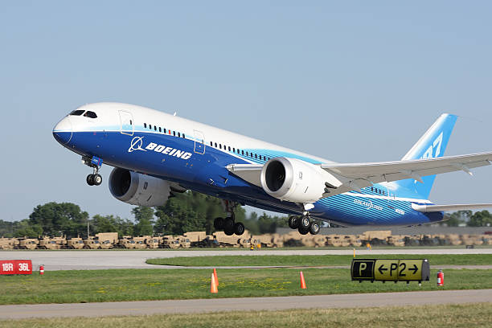

Cele mai comune tipuri de aeronave comerciale
Familia Airbus
- Airbus318-modelul cel mai mic
- Airbus320-modelul standard, principalul competitor pentru Boeing737
- Airbus321-modelul mai mare
- Airbus380-cel mai mare avion de pasageri din lume, construit pentru a contesta dominatia lui Boeing747
Familia Boeing
- Boeing727
- Boeing737-Original
- Boeing737-Clasic
- Boeing737-NG
- Boeing737-MAX
- Boeing747-Jumbo Jet
Aeronave pentru distante scurte
- ATR 42
- ATR 72
- EMBRAER ERJ 145